市场摘要
今日核心要点与市场整体情绪研判
核心要点
- 美伊达成谅解备忘录，霍尔木兹海峡有望开放，国际油价暴跌5%，现货黄金飙涨重回4300美元
- 日经225指数期货早盘上涨3.4%，韩国首尔综指高开5%，MSCI亚太指数上涨1.2%
- 央行6000亿买断式逆回购等量续作，终结三连回笼，释放流动性维稳信号
- A股市场重大调整在即，11部门送利好，逾百亿资金回流股票型ETF
- 首批商业不动产REITs本周上市交易，机构投资者持有份额占比超90%
- 5月贷款重回正增长，但居民贷款仍待修复；2万亿居民存款罕见两连降
- 科创板改革再获政策支持，中证报评论员发文托举硬科技未来
- 公募基金风格漂移整治升级，严重偏离投资方向纳入基金经理负面考核指标
优必选携手沐曦股份共研具身智能端侧芯片
日经225指数期货在早盘交易中上涨3.4%
日经225指数高开1.2%，韩国首尔综指高开5%。 MSCI亚太指数上涨1.2%至275.06点。
美将豁免对伊朗石油制裁伊朗媒体披露了伊美谅解备忘录14个条款的部分内容。37分钟前
英法德意四国称将解除对伊朗制裁英法德意四国称将解除对伊朗制裁7分钟前
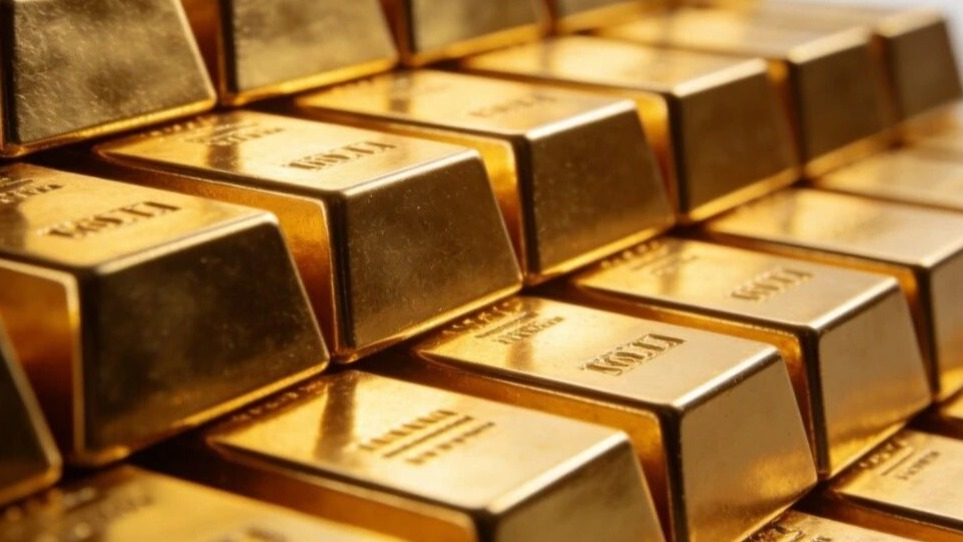
8美伊达成协议，现货黄金飙涨重回4300美元、国际油价暴跌5%
伊美谅解备忘录14个条款部分内容披露：美将豁免对伊朗石油制裁
A股明天重大调整、11部门送利好……影响一周市场的十大消息
月内153只债基合计分红超45亿元
逾百亿资金回流股票型ETF，业内人士称极致分化行情有望收敛
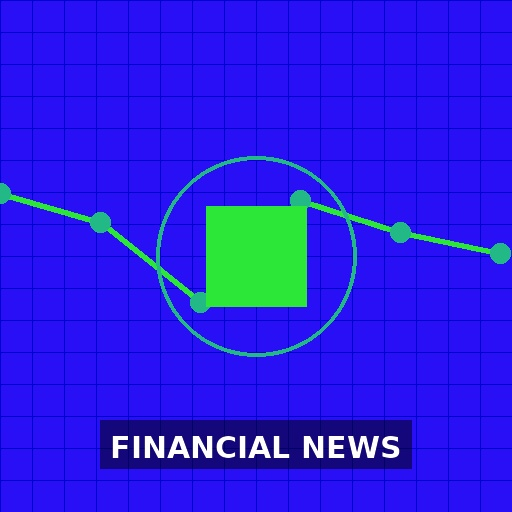
24首批商业不动产REITs本周上市交易 机构投资者持有份额占比超90%
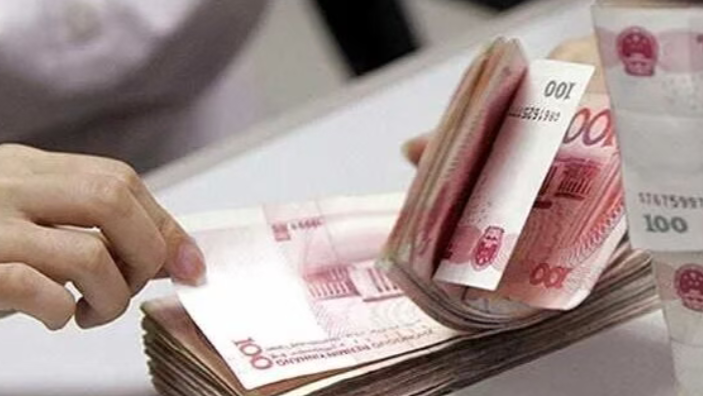
336000亿买断式逆回购等量续作，央行终结三连回笼释放何信号？
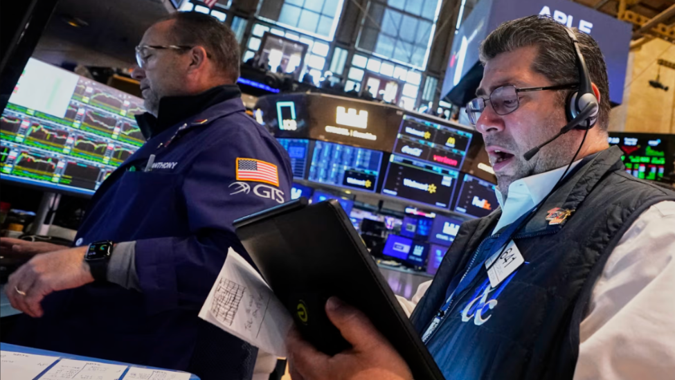
66霍尔木兹开放消息引爆市场：油价急跌，股市全线拉升
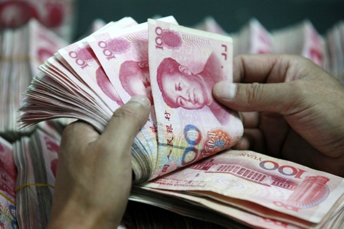
1065月贷款重回正增长 票据融资放量、居民贷款仍待修复
罕见两连降！2万亿居民存款搬去了哪有多少流入了股市？昨天 21:33
行业分析
板块动态、市场主题与结构性机会
市场主题
板块分析
新能源
政策利好与行业整合并行。华泰证券指出政策首提2030年新能源重卡目标，利好动力电池及绿氢产业链；部分新能源车企破产或停摆，烂尾车车主权益问题凸显，行业进入残酷决赛阶段。蔚来李斌预计2026年国内零售量同比下跌超15%。
新能源重卡和绿氢产业链迎来政策催化，但整车企业面临激烈竞争和出清风险，建议关注上游材料和基础设施环节。
半导体
优必选携手沐曦股份共研具身智能端侧芯片，显示AI与硬件融合趋势；AI算力需求拉动电子布年内第5轮提价，玻纤景气持续。外资巨头认为AI超级周期未结束。
具身智能和AI算力相关半导体材料及设备需求旺盛，科创板改革托举硬科技，建议关注AI芯片及配套产业链。
消费
博闻科技携十二花神系列咖啡亮相南博会，淘宝闪购助力北京餐饮订单增超六成，银发族成新增量。但5月居民贷款仍待修复，消费复苏力度需观察。
消费板块呈现结构性亮点，餐饮、新零售及银发经济有增长潜力，但整体消费信贷修复缓慢，建议精选个股。
地产
公租房保障扩围，健全住房保障资金体系呼声渐高；个人购买大额存单20万元认购起点执行十年，新规拟制度化。地产政策以保障性住房和金融规范为主。
地产板块受政策托底但基本面仍承压，关注保障房相关产业链及REITs机会。
银行
中行宁波分行副行长叶新阶被查，松日系数百亿不良贷款案再落一人；金融反腐持续深入，退休近9年的人保原副总裁俞小平被查。央行逆回购等量续作，流动性平稳。
金融反腐常态化，短期对银行股情绪有压制，但中长期有利于行业健康发展。银行板块估值低，股息率高，具备防御价值。
医药生物
中国生物制药董事会决议通过不超20亿港元股份购买计划；麦科医药-B招股；谷雨从60亿美妆跨界生命健康赛道。保险行业向健康管理赛道转型。
医药生物板块内部分化，创新药和健康管理赛道受资本关注，建议关注有回购和产品管线的龙头企业。
风险评估
主要风险因素、影响程度与应对策略
美伊达成协议，现货黄金飙涨重回4300美元、国际油价暴跌5%
中东局势缓和，“恐慌性抛售”来得有点快，原油期货净多头寸较峰值已腰斩
霍尔木兹开放消息引爆市场：油价急跌，股市全线拉升
中东，突生变数！伊朗称将报复以色列
特朗普：伊朗协议是在内塔尼亚胡反对的情况下达成的。 若无法达成核协议，美国将恢复对伊朗的打击。 谅解备忘录将暂停霍尔木兹海峡的收费60天。 协议将确保海峡
车市进入残酷决赛阶段 蔚来李斌预计2026年国内零售量同比下跌超15%
部分新能源车企破产或停摆，烂尾车车主权益如何保障
5月贷款重回正增长 票据融资放量、居民贷款仍待修复
罕见两连降！2万亿居民存款搬去了哪有多少流入了股市？昨天 21:33
中行宁波分行副行长叶新阶被查 松日系数百亿不良贷款案再落一人
整治风格漂移 严重偏离投资方向纳入基金经理负面考核指标
反腐记｜陈宇剑、俞小平被查
金融领域又打一“虎”，退休已近9年
2家A股公司，领罚单！
索赔！中信建投将紫晶存储“帮凶”一并告上法庭
退休近九年 人保集团原副总裁俞小平被查
投资建议
可操作的投资机会与防御性策略
投资机会
优必选携手沐曦股份共研具身智能端侧芯片
电子布年内第5轮提价，AI算力需求拉动玻纤景气持续
外资巨头下半年展望：AI超级周期未结束 重新审视避险资产
华泰证券：政策首提2030年新能源重卡目标 利好国内动力电池及绿氢产业链
零碳公路运输的“胜负手”：160万辆新能源重卡背后的三场硬仗
海富通基金成钧：港股仍是全球的“价值洼地” 看好三大方向
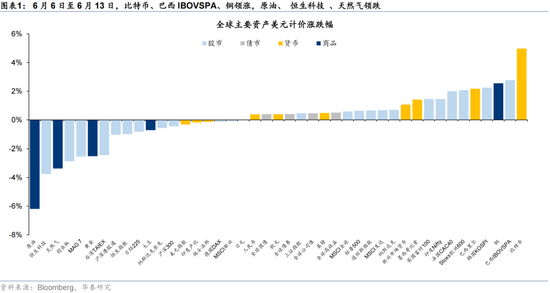
142华泰|港股情绪触底后或超跌反弹
首批商业不动产REITs本周上市交易 机构投资者持有份额占比超90%
美伊达成协议，现货黄金飙涨重回4300美元、国际油价暴跌5%
霍尔木兹开放消息引爆市场：油价急跌，股市全线拉升
中东，突生变数！伊朗称将报复以色列
华泰证券A股策略：短期建议均衡配置 待科技板块拥挤度压力释放后吸筹
中行宁波分行副行长叶新阶被查 松日系数百亿不良贷款案再落一人
反腐记｜陈宇剑、俞小平被查
金融领域又打一“虎”，退休已近9年
市场展望
前瞻分析、关键催化剂与重点关注指标
短期展望 · 1–3个月
受美伊协议利好，亚太市场情绪提振，A股有望迎来反弹。但中东局势仍有变数，油价波动可能影响周期板块。央行流动性维稳，资金回流ETF，市场极致分化行情有望收敛。短期关注科技股拥挤度释放后的低吸机会。
中长期展望 · 6–12个月
中长期看，科创板改革和AI超级周期将持续驱动硬科技成长，新能源重卡和绿氢产业链政策明确。但需警惕新能源车行业出清、居民消费修复缓慢等风险。外资巨头看好AI，港股价值洼地有望吸引资金流入。
关键催化剂
- 美伊协议正式签署及霍尔木兹海峡开放进展
- 本周多家央行利率决议（美联储、欧央行等）
- G7峰会及中东后续谈判
- 中国5月经济数据（社融、工业增加值等）
- 科创板改革具体政策落地
- 首批商业不动产REITs上市表现
重点关注
- 布伦特原油价格走势（关注80美元关口）
- 黄金价格是否站稳4300美元
- 北向资金流向
- 人民币汇率波动
- 新能源车企破产进展及行业整合动态
- 公募基金调仓方向（科技vs消费）
优必选携手沐曦股份共研具身智能端侧芯片
日经225指数期货在早盘交易中上涨3.4%
日经225指数高开1.2%，韩国首尔综指高开5%。 MSCI亚太指数上涨1.2%至275.06点。
美将豁免对伊朗石油制裁伊朗媒体披露了伊美谅解备忘录14个条款的部分内容。37分钟前
英法德意四国称将解除对伊朗制裁英法德意四国称将解除对伊朗制裁7分钟前
美伊达成协议，现货黄金飙涨重回4300美元、国际油价暴跌5%
伊美谅解备忘录14个条款部分内容披露：美将豁免对伊朗石油制裁
A股明天重大调整、11部门送利好……影响一周市场的十大消息
月内153只债基合计分红超45亿元
逾百亿资金回流股票型ETF，业内人士称极致分化行情有望收敛
首批商业不动产REITs本周上市交易 机构投资者持有份额占比超90%
6000亿买断式逆回购等量续作，央行终结三连回笼释放何信号？
中东局势缓和，“恐慌性抛售”来得有点快，原油期货净多头寸较峰值已腰斩
华泰证券：政策首提2030年新能源重卡目标 利好国内动力电池及绿氢产业链
车市进入残酷决赛阶段 蔚来李斌预计2026年国内零售量同比下跌超15%
本周关注多家央行利率决议、中东局势以及G7峰会
霍尔木兹开放消息引爆市场：油价急跌，股市全线拉升
市场分析 ：市场喜迎美伊和平协议，但预计油价将维持于高位
海富通基金成钧：港股仍是全球的“价值洼地” 看好三大方向
电子布年内第5轮提价，AI算力需求拉动玻纤景气持续
外资巨头下半年展望：AI超级周期未结束 重新审视避险资产
5月贷款重回正增长 票据融资放量、居民贷款仍待修复
罕见两连降！2万亿居民存款搬去了哪有多少流入了股市？昨天 21:33
华泰证券A股策略：短期建议均衡配置 待科技板块拥挤度压力释放后吸筹
中东，突生变数！伊朗称将报复以色列
机构：如果霍尔木兹海峡不再被封锁，布伦特原油期货年底前可能跌至每桶80美元
零碳公路运输的“胜负手”：160万辆新能源重卡背后的三场硬仗
华泰|港股情绪触底后或超跌反弹
优必选携手沐曦股份共研具身智能端侧芯片
日经225指数期货在早盘交易中上涨3.4%
日经225指数高开1.2%，韩国首尔综指高开5%。 MSCI亚太指数上涨1.2%至275.06点。
三星集团成立能源业务特别工作组
博闻科技携十二花神系列咖啡产品亮相南博会
美将豁免对伊朗石油制裁伊朗媒体披露了伊美谅解备忘录14个条款的部分内容。37分钟前
英法德意四国称将解除对伊朗制裁英法德意四国称将解除对伊朗制裁7分钟前
美伊达成协议，现货黄金飙涨重回4300美元、国际油价暴跌5%
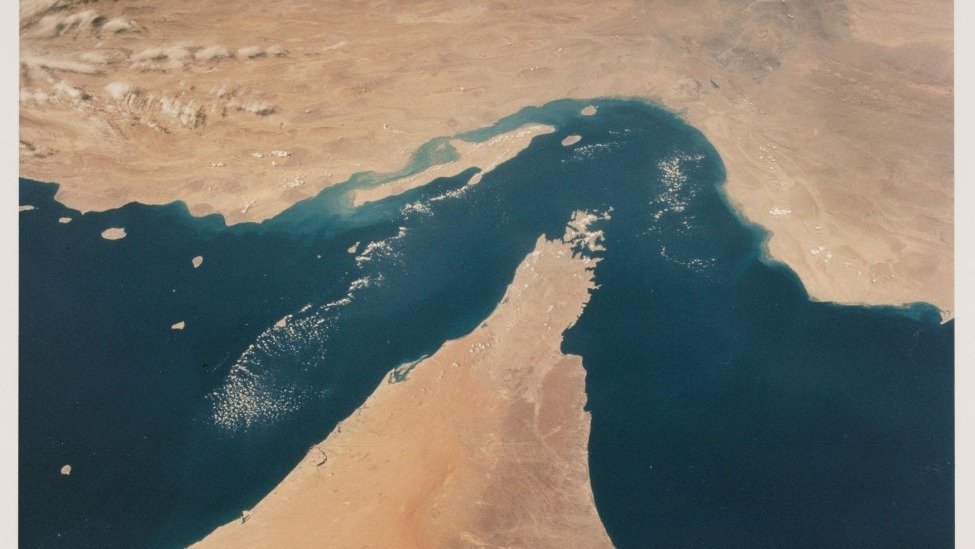
法国“打配合”，英国动手，一艘俄罗斯油轮被拦截06-14 22:470评
伊美谅解备忘录14个条款部分内容披露：美将豁免对伊朗石油制裁
中行宁波分行副行长叶新阶被查 松日系数百亿不良贷款案再落一人
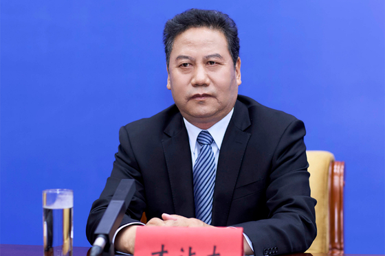
人事观察｜57岁首次跨省份交流 候补中委才让太履新西藏统战部长
公租房保障扩围 健全住房保障资金体系呼声渐高
整治风格漂移 严重偏离投资方向纳入基金经理负面考核指标
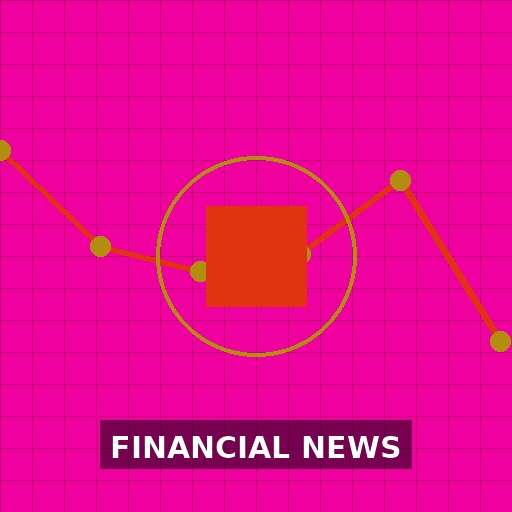
中证报评论员：以科创板改革之力托举硬科技未来
A股明天重大调整、11部门送利好……影响一周市场的十大消息
反腐记｜陈宇剑、俞小平被查
遭AI诬陷的律师：我不反AI 只反甩锅AI的恶意侵权
英国、法国、德国和意大利：准备解除对伊朗的相关制裁
月内153只债基合计分红超45亿元
一艘液化天然气船驶向霍尔木兹海峡 美伊协议带来海峡重开希望
金融领域又打一“虎”，退休已近9年
逾百亿资金回流股票型ETF，业内人士称极致分化行情有望收敛
首批商业不动产REITs本周上市交易 机构投资者持有份额占比超90%
仙工智能于6月15日至6月18日招股 预期6月24日上市
菊乐股份即将上会审议 募资必要性遭质疑
鼎捷数智拟收购能誉科技51%股权
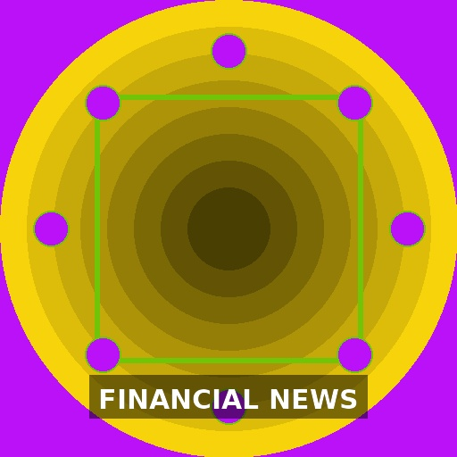
2025网易新能量 乳制品行业评选
运动、AI全安排 保险公司跨界“整活”！向健康管理赛道“开卷”
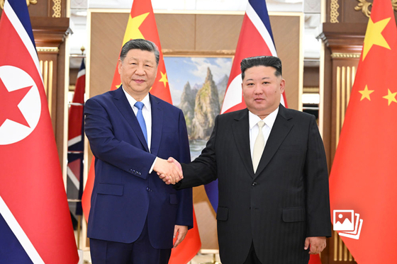
一周天下｜习近平访问朝鲜、美加墨世界杯开幕
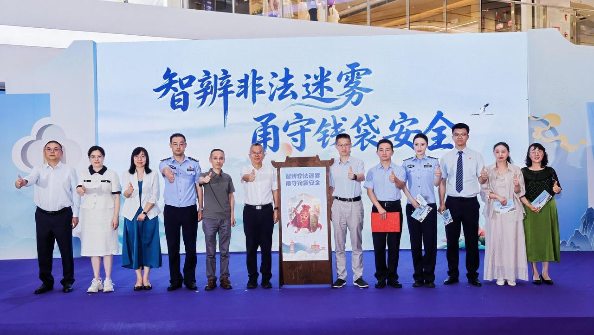
“金融市集”搬进商场 宁波创新构建全民防非沉浸式课堂
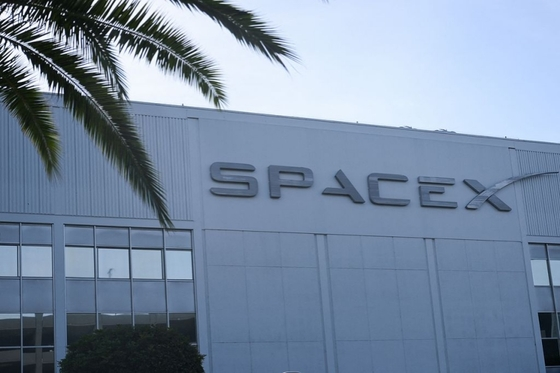
SpaceX上市首日涨19% 市值突破2.1万亿美元(含视频)
6000亿买断式逆回购等量续作，央行终结三连回笼释放何信号？
现货钯金上涨近3%至每盎司1,328.09美元。
中东局势缓和，“恐慌性抛售”来得有点快，原油期货净多头寸较峰值已腰斩
中国即将发行或正在发行的地方政府债
谷雨“第二增长曲线”浮出水面：从60亿美妆到生命健康赛道05-28 20:120评
乌克兰首都基辅再度传出连续爆炸声
伊朗副外长：核实美方履行承诺后将启动60天谈判60天谈判将涉及解除美国对伊朗全部制裁、伊朗核问题以及经济重建与发展问题。54分钟前
中国生物制药：董事会决议通过总额不超20亿港元股份购买计划
麦科医药-B于6月15至18日招股 拟全球发售5805.44万股H股
韩国5月未从伊朗进口原油
公募“去明星化”进行时， 产品业绩分化透露调仓迹象
球票贵出行贵签证难，世界杯美国多城酒店机票销售遇冷？酒店、航空、旅游从业人士寄希望于市场需求在小组赛结束后迎来反弹。昨天 21:36
公告臻选｜捕捉每日公告中的“黄金机会”告别信息过载，把握市场先机，捕捉每天公告中的“黄金机会”。2025-11-03 14:49
盘前点金｜研判主题机会 挖掘潜力个股每日盘前，为您抢先捕捉关键讯息（①最新券商观点；②高关注题材；③财经要闻重点；④潜力标的挖掘），助您从容开启交易日！01-07 10:02

玖龙纸业启动4亿美元永续资本证券回购要约以优化资本架构
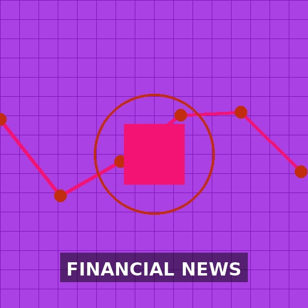
“10元基”数量破百只！三大类经典投资策略归因分析

财经早知道｜美伊确认达成协议 国际油价显著下跌
华泰证券：政策首提2030年新能源重卡目标 利好国内动力电池及绿氢产业链
车市进入残酷决赛阶段 蔚来李斌预计2026年国内零售量同比下跌超15%
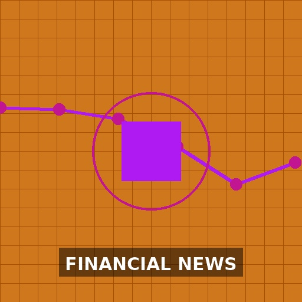
安得智联更新港股上市招股书 近三年营收稳步提升
特朗普喊话“让石油流动起来”：美伊协议达成，海峡开放
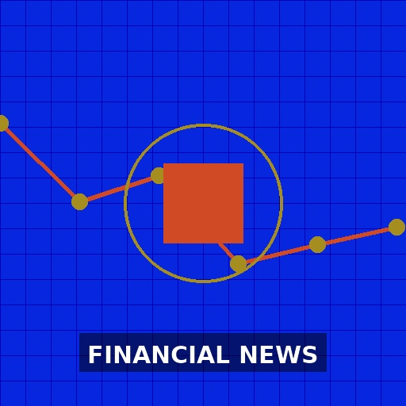
全国夏粮小麦收获进度近87%
本周关注多家央行利率决议、中东局势以及G7峰会
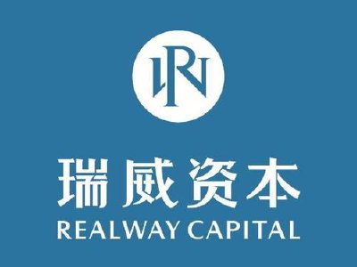
瑞威资管拟合计4000万元收购两只智能驾驶主题基金合伙份额
淘宝闪购助力北京餐饮连锁品牌订单规模增超六成 银发族成新增量
A股股票回购一览：2家公司披露回购进展
2家A股公司，领罚单！
伊朗正式确认伊美就结束战争达成谅解备忘录
部分新能源车企破产或停摆，烂尾车车主权益如何保障
中老铁路今年以来累计运输货物突破1000万吨
深夜，特朗普发文“救市”
索赔！中信建投将紫晶存储“帮凶”一并告上法庭
英国6月Rightmove平均房屋要价指数环比 -0.6%，前值 1.2%。
霍尔木兹开放消息引爆市场：油价急跌，股市全线拉升
国际航协理事长：高油价下中国航司面临更严峻的盈利挑战
尼克斯队时隔53年再获NBA总冠军 特朗普曾亲临观战
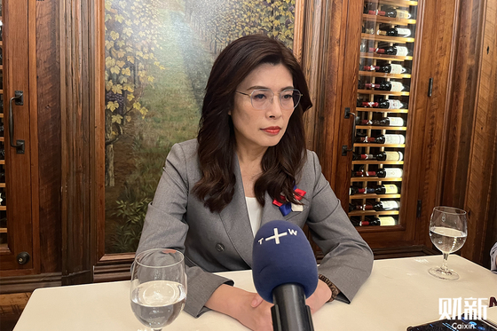
郑丽文称访美之行有效澄清“抹黑” 尚未思考投入下届岛内大选
市场分析 ：市场喜迎美伊和平协议，但预计油价将维持于高位
管涛︱今年中国外贸发展一大特色：增量集中度高宏观政策不能只看总量，还需要考虑对非AI相关行业提供结构性的支持。昨天 21:39
海富通基金成钧：港股仍是全球的“价值洼地” 看好三大方向
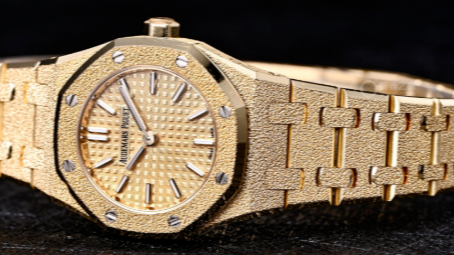
黄金身价倍增，二手奢侈金表竟成炼金原料
相关风险事项清除 7家公司集中“摘帽”
元保集团与中国太保产险重磅发布“超医保”臻享版普惠健康险06-01 20:410评
伊朗最高国家安全委员会正式确认伊美谅解备忘录达成
凤凰鉴保官 | “好医保”评测04-29 22:060评
美股巨型IPO或重塑全球上市格局
电子布年内第5轮提价，AI算力需求拉动玻纤景气持续
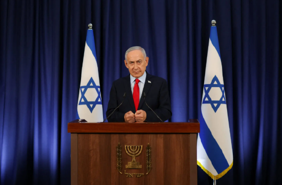
以媒：美伊谅解备忘录细节公布之前，国内已普遍滋生不满
特朗普：霍尔木兹海峡将随美伊协议19日签署而开放
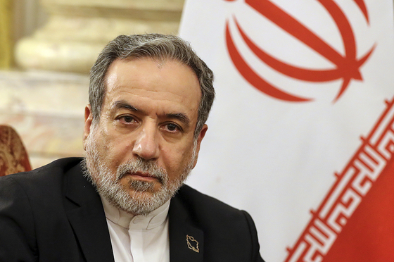
伊朗方面披露停战协议内容 特朗普斥伊媒所报条款为“假新闻”
新基金业绩首尾相差109个百分点 两大原因是关键
高能同步辐射光源计划年内正式运行
北京商报侃股：上市公司退市潮仍会持续
国内首个企业“投资于人”的可持续发展指标体系研究报告发布
现货钯金上涨近3%
外资巨头下半年展望：AI超级周期未结束 重新审视避险资产
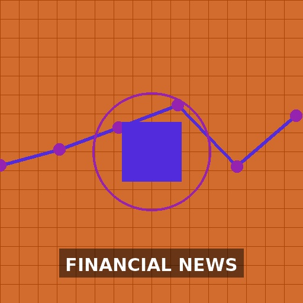
SpaceX上市驱动航天ETF反弹，基金经理：看好时代级机遇
2026网易经济学家年会
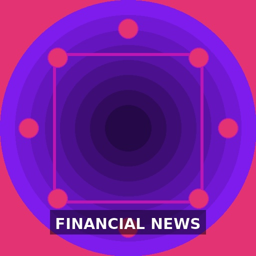
股市内参：总比别人领先一步
“十五五”国资改革启幕，推动国有资本实现“三个集中”，地方精准落子释放强动能
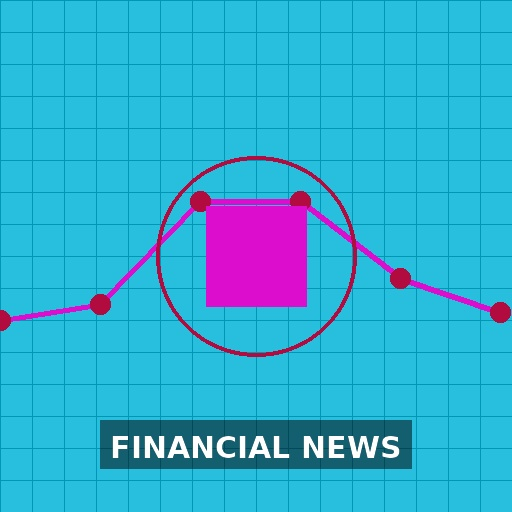
4连板大牛股和远气体最新公告
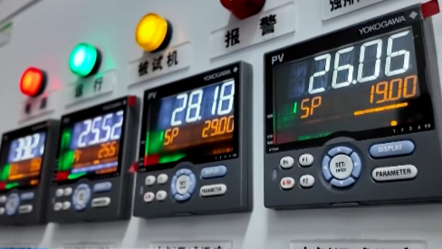
一剂难求，价格创近十年新高，制冷剂为何不“冷”静？
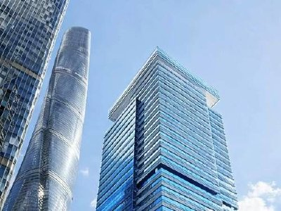
第一太平获Brandes Investment Partners, L.P.增持约176.01万股 每股作价4.89港元
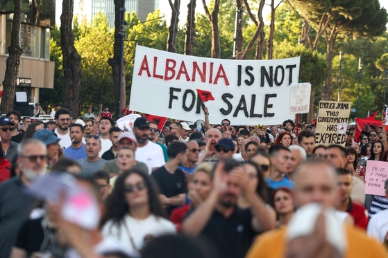
特朗普家族跨国地产项目被指破坏当地生态 阿尔巴尼亚爆发大规模抗议
北交所公司调研热度攀升 新能源与医药赛道受关注
本周中国央行公开市场7190亿元逆回购到期
华恒生物“生物+AI”全链条赋能平台入选工信部典型案例
经营好转 多家A股上市公司本周摘帽
【十大券商一周策略】“鱼尾行情”有望重启！
智慧运动SUV昊铂S600上市
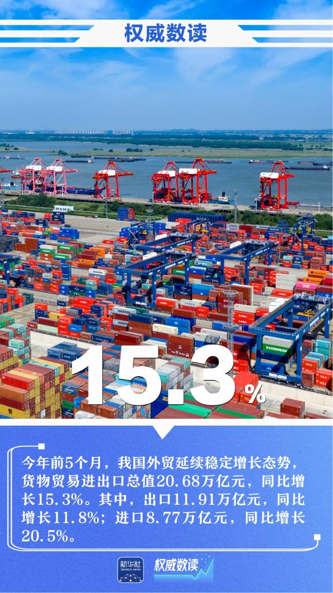
06-13 15:28权威数读丨一周“靓”数权威数读丨一周“靓”数前5个月，我国货物贸易进出口总值同比增长15.3%；5月份，全国居民消费价格指数（CPI）同比上涨1.2%；5月份，人工智能、人形机器人等前沿领域的资本投资金额同比增长约5倍……本周，这些数据最值得关注！
原油快速跳水！美伊谈判传来重大动向
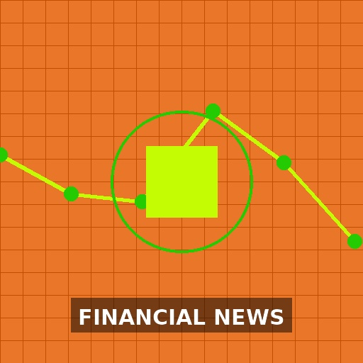
盘前必读丨伊美谅解备忘录已达成；中际旭创回应“业绩爆雷”传闻机构认为，市场新一轮情绪周期底部的信号已经显现。3分钟前
5月贷款重回正增长 票据融资放量、居民贷款仍待修复
美伊达成和平协议后日经指数料将上涨
武田制药170亿元反垄断罚单启示：付费延迟终结，药企合规大考来临靠垄断“躺赢”的老路已经走不通，合规与创新的新时代已然到来。昨天 21:39
罕见两连降！2万亿居民存款搬去了哪有多少流入了股市？昨天 21:33
选科技还是选消费？一批次新基金维持观望姿态，没有轻易重仓布局
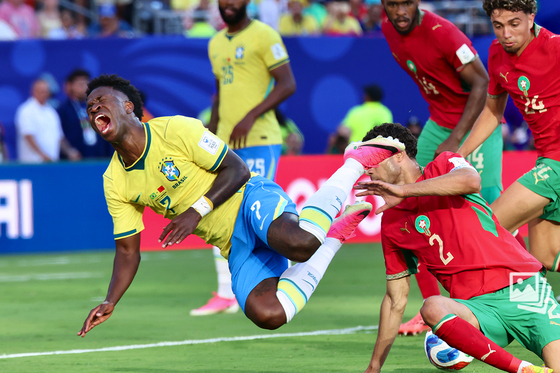
美加墨世界杯 巴西首场1-1战平摩洛哥
野村：受美伊达成协议影响 美债收益率曲线料将趋陡
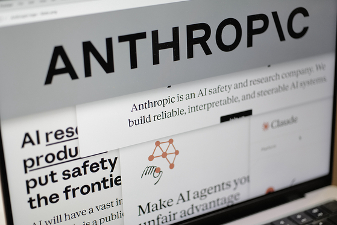
美国下达管制令 Anthropic关停最新大模型服务
暗自较劲多年，这两座城要“牵手”了06-14 22:380评
全球AI治理三大模式急需走向合作与共振中美欧更须求同存异，协力构建对全球AI治理具有决定性作用的国际规则。昨天 21:39
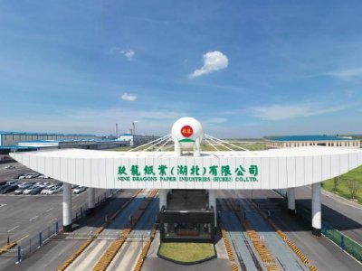
玖龙纸业获若干银行提供20亿元的贷款
华泰证券A股策略：短期建议均衡配置 待科技板块拥挤度压力释放后吸筹
中东，突生变数！伊朗称将报复以色列
1至5月份国家铁路发送货物16.7亿吨
机构：如果霍尔木兹海峡不再被封锁，布伦特原油期货年底前可能跌至每桶80美元
美能能源终止募投项目“换脸” 巧施“财技”卡点增资收购自家关联资产
日本首相高市早苗：欢迎美伊和平协议，这是重要一步。 希望霍尔木兹海峡通行自由、安全。 希望就伊朗核问题达成最终协议。
高瓴创投独家投资柔性机器人企业弘火智能科技
一字被解读出唐宋八大家，小马云重回流量中心06-14 22:410评
研报金选丨每日提炼市场最强音 游资私募都在用每天被上百份研报淹没？《研报金选》= 你的专属 "研报过滤器+投研时间压缩器"！周日-周四，每天3-5篇，1页纸说清主线+预期差！2025-06-20 11:14
“智”造赋能焕新机 老工业基地踏浪启征程
退休近九年 人保集团原副总裁俞小平被查
2025网易经济学家年会夏季论坛
零碳公路运输的“胜负手”：160万辆新能源重卡背后的三场硬仗
海富通基金成钧：中证A500指数的可投资性较高
抢滩万亿市场 太空竞争转向综合服务输出
仙乐健康：两高管增持公司股份 承诺半年内不减持
特朗普：伊朗协议是在内塔尼亚胡反对的情况下达成的。 若无法达成核协议，美国将恢复对伊朗的打击。 谅解备忘录将暂停霍尔木兹海峡的收费60天。 协议将确保海峡
特朗普：在内塔尼亚胡反对下与伊朗达成协议 霍尔木在海峡将“永久免费开放”
细节曝光：美被曝同意伊朗稀释浓缩铀库存
日韩股市集体高开 韩股开盘大涨5%

新华社权威速览丨省级“十五五”规划纲要看点之十八
美国养老照护体系的危机如何缓解︱鞠川阳子话养老问题不是“缺钱”，而是钱花错了地方、制度设计错了方向、劳动力政策错过了窗口期。昨天 21:40
澳大利亚3年期国债收益率下行5个基点。
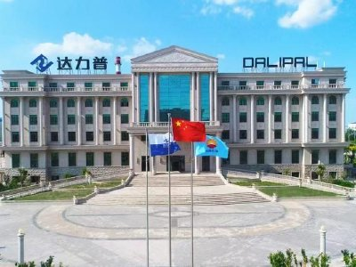
达力普控股获埃及通用石油公司万吨油井管订单
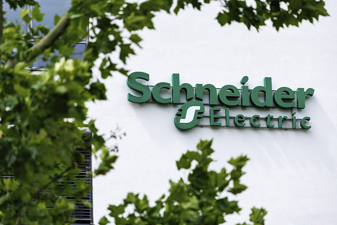
施耐德电气与加拿大稀土开发商合作 欲打造北美稀土产业链
华泰|港股情绪触底后或超跌反弹
贝莱德建信理财总经理调整 在华管理规模超700亿元
中国联通发布高质量数据集亿元支持计划
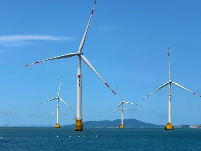
龙源电力完成发行25亿元超短期融资券
个人购买大额存单20万元认购起点执行十年 新规拟将其制度化
华尔街见闻早餐 | 2026年6月15日
英法德意四国称将解除对伊朗制裁
伊朗称所获成果远大于承诺